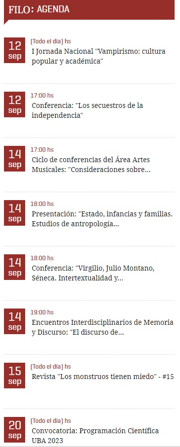
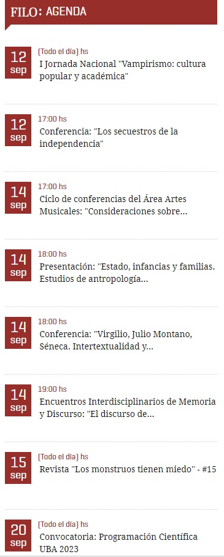

Institucional
Conocé la composición orgánica de la Facultad y las distintas áreas de estudio de la misma para estar al tanto de las carreras.
Conocé la composición orgánica de la Facultad y las distintas áreas de estudio de la misma para estar al tanto de las carreras.
Los últimos acontecimientos de la Facultad, fecha de apertura de inscripciones, votaciones e información importante sobre la situación académica de la misma.
Enterate de los últimos y nuevos eventos que organiza la Facultad dentro y fuera de Puan. Vas a poder participar de Congresos, Jornadas o de los Talleres que se brinden.
 
